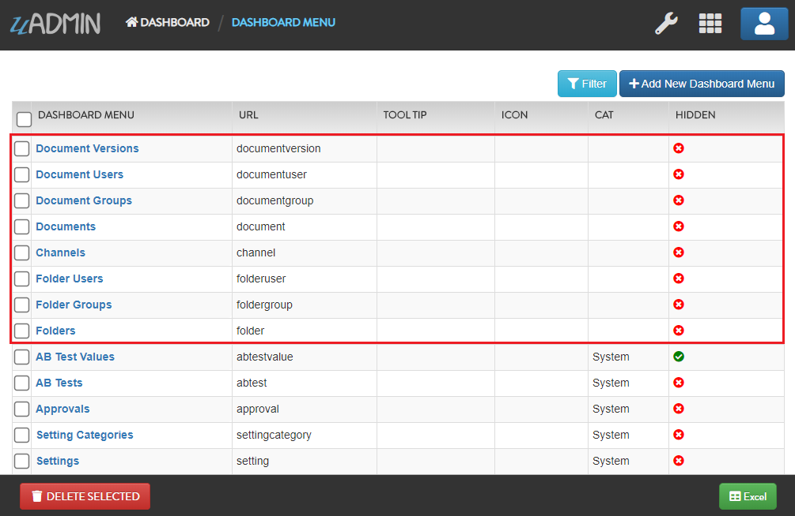
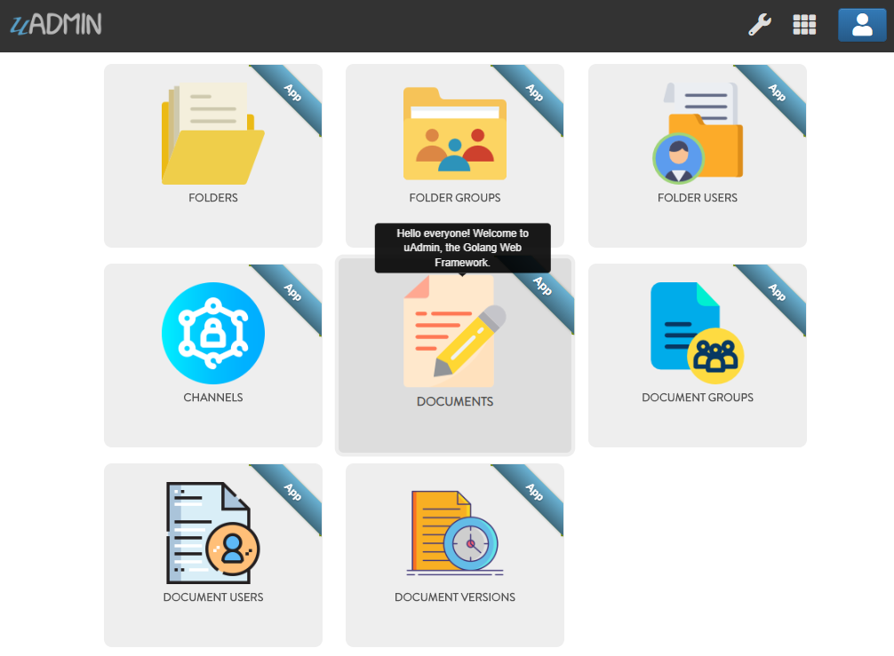

Document System Tutorial Part 17 - Wrapping Up Your Application¶
So far you have developed this really cool application that you want to show to your your customer or even to the world. Before you dockerize your application, let’s customize your dashboard in a fashionable way. Making it look good and customizing it to meet your customers requirements is important to the success of your app.
First of all, open DASHBOARD MENUS.

Open the models that you have created and let’s add the Tool Tip that means the information you want to show when you hover the mouse to the model, an icon that you like to represent in the dashboard, and Cat which is the highlight of your model.
By default any model that does not have an icon gets this icon:

If you don’t have any pictures or icons in your computer, I would recommend you to go over flaticon.com, but you can browse anywhere online. Once you search for an icon, download the PNG version and choose the size 128 pixels.

Result of my dashboard setup
Let’s hide the Document and Folder related models in the dashboard. In order to do that, create a HideInDashboard() function that returns a boolean value which is true.
document_group.go
// HideInDashboard !
func (DocumentGroup) HideInDashboard() bool {
return true
}
document_user.go
// HideInDashboard !
func (DocumentUser) HideInDashboard() bool {
return true
}
document_version.go
// HideInDashboard !
func (DocumentVersion) HideInDashboard() bool {
return true
}
folder_group.go
// HideInDashboard !
func (FolderGroup) HideInDashboard() bool {
return true
}
folder_user.go
// HideInDashboard !
func (FolderUser) HideInDashboard() bool {
return true
}
Result:

The Document System Dashboard is now much cleaner than before.
Once you are done with the setup, it’s about time to dockerize your application for the world to see. Go to the Docker Website for more details.
Congrats, now you know how to do the following in the entire series:
Preparing uAdmin files in the project folder
Build an application from scratch
Change the dashboard title
Creating external models
Using Register Inlines
Adding a drop down list to the field manually
Updating the Document Version
Group Permission
Document and Folder Permissions
Creating a custom AdminPage and Count functions based on the UserID
Permissions Form that creates a field and permission values
Using Schema Form Modifier to set the CreatedBy field as ReadOnly.
Using Schema List Modifier to limit user access in a specific record
Customize your dashboard
Hide models by using HideInDashboard() function
Dockerize your application online
Click here to view the full progress of this application.
If you want to learn more and discover about the concepts of uAdmin, you may go to these references with examples: